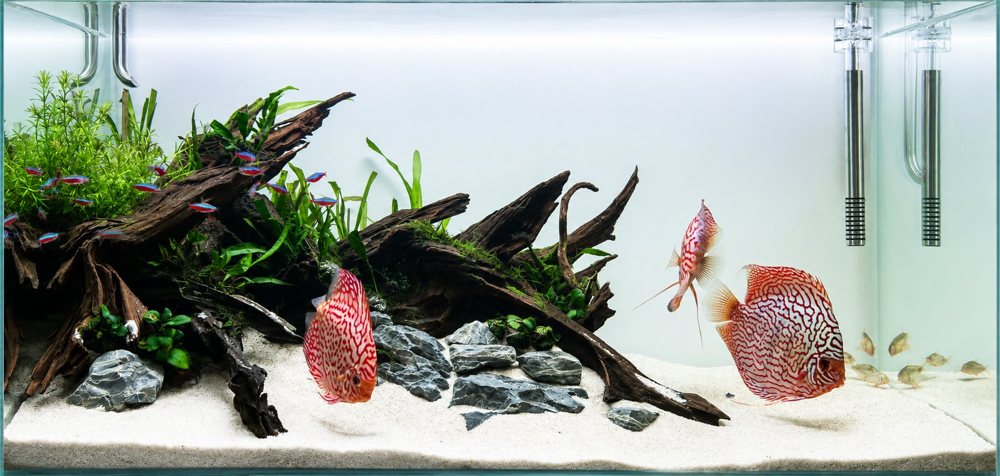
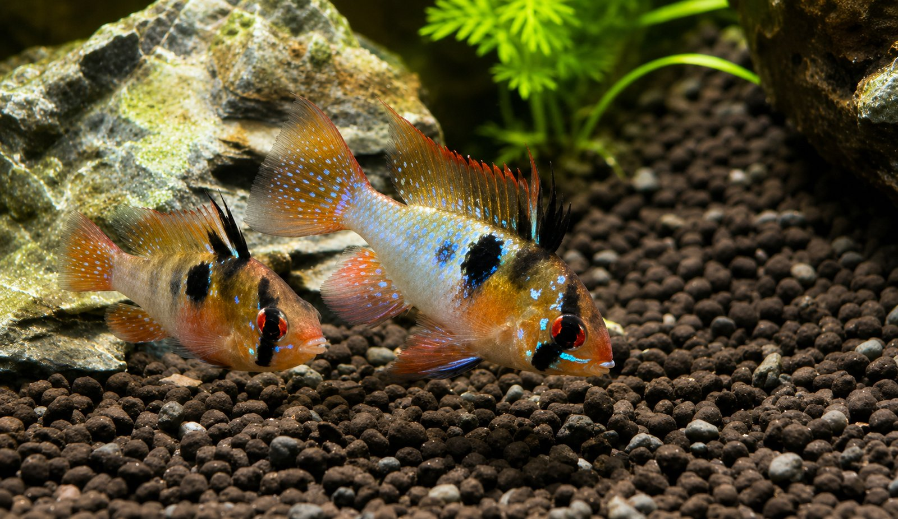
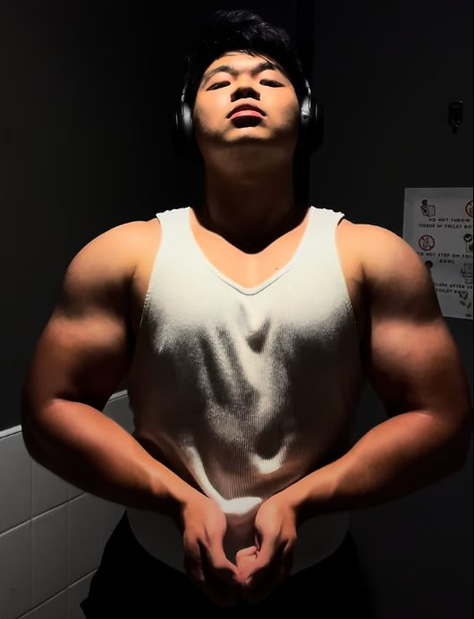
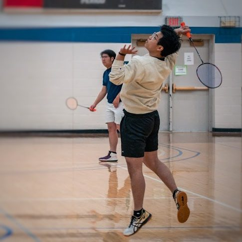
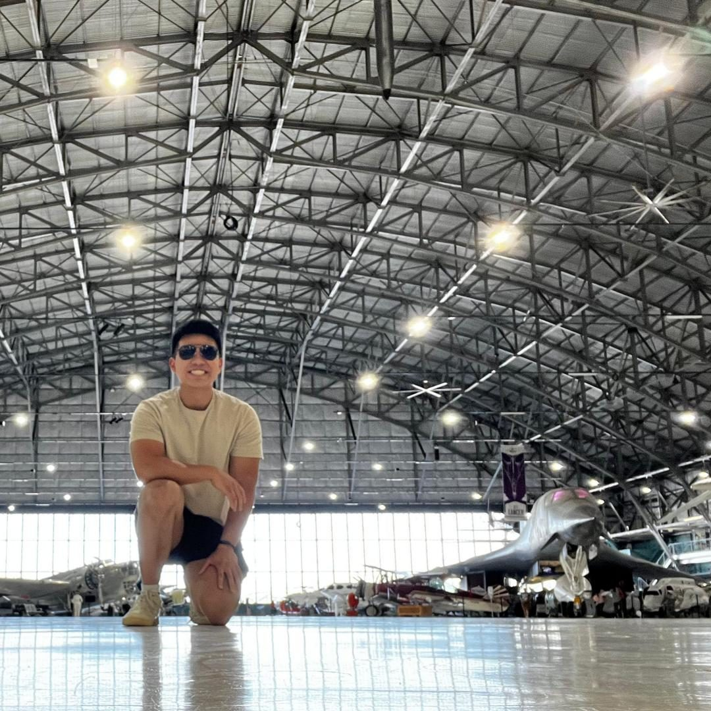
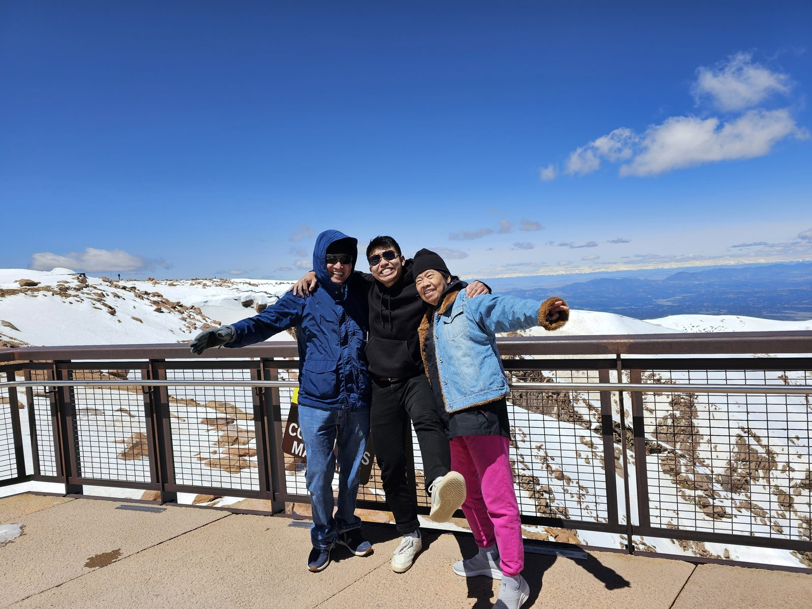
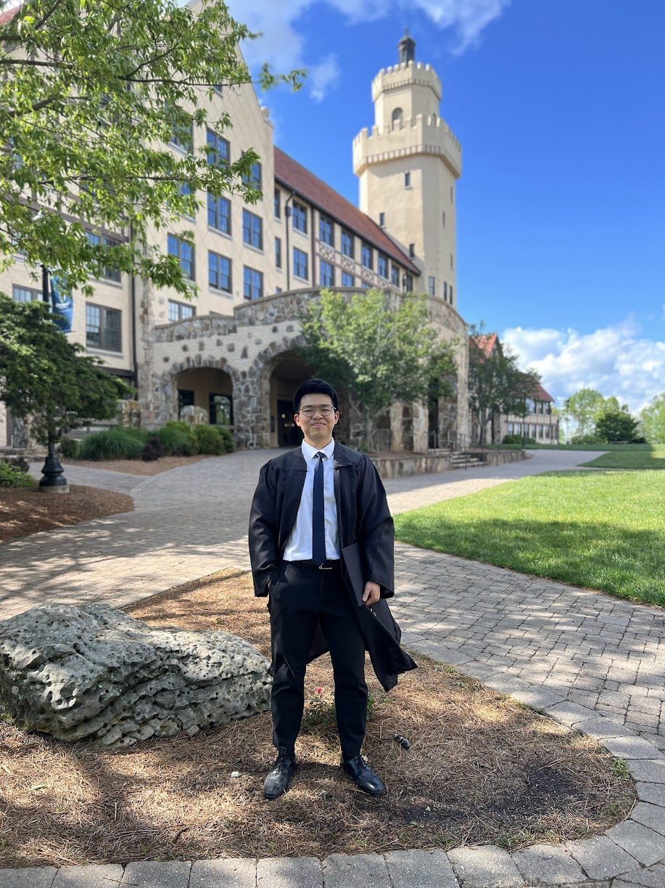
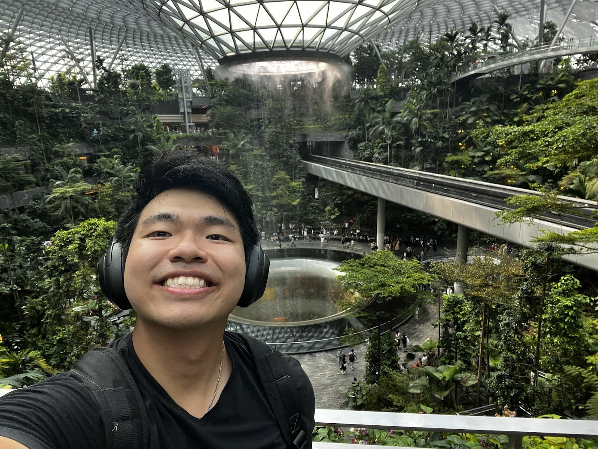
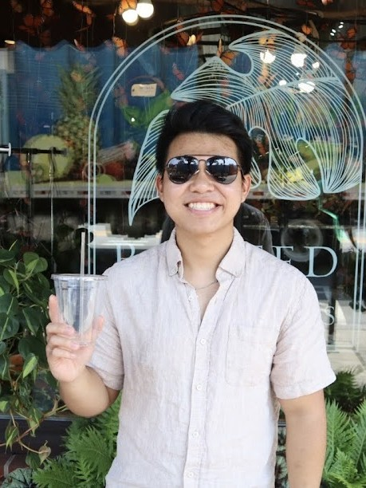

Drummer · Bodybuilder · Aquascaper
Strategy by day. Lifting by night.
GLADWONG

Get in touch
Scroll down
New Orleans, LA & Penang, MY
Grade 8 · Rockschool drums
16 years on the drums
Drummer · Bodybuilder · Aquascaper
Strategy by day. Lifting by night.
01About
I'm Glad. By day I make businesses run better. The rest of the time I'm behind a drum kit, under a barbell, or elbow deep in a fish tank.

I grew up in Penang, went to Covenant College on Lookout Mountain, Georgia, spent a year in healthcare analytics in Chattanooga, then went back to Malaysia for my MBA at Putra Business School. These days I'm based between New Orleans and Penang.
I like work where the answer is hiding somewhere in the data and somebody has to go find it. I also like things that only reward you for showing up every day, which probably explains the drums, the gym, and the planted tanks.
I speak English, Mandarin, and Malay, plus basic Hokkien and Cantonese.
02Off the clock


01 / Music
I've played drums for 16 years and hold Grade 8 from Rockschool. For four years I played in the drum corps and served on the chapel worship team at Covenant College. On Sunday nights I led worship for my hall on guitar and cajon.
Guitar came later and it's quieter. Different discipline, same habit of coming back to it every day.




02 / Aquascaping
These are my tanks. A planted tank takes months to settle and about a day to wreck. I like that it punishes shortcuts. It's the same patience I need for a data model, except this one has fish in it.
My room is never without something growing in it. At Covenant I was president of the Growers Club.



03 / Bodybuilding
Structured programming, tracked numbers, slow progress. It's the same loop as analytics, except I'm the dataset.
And no, I don't train in the morning.
These days I'm also on the mats.


04 / Badminton
I play at Chattanooga Badminton Club whenever I'm in town and have represented the city. At Covenant I co-founded the badminton club and served as vice president.

Sixteen years in
Keep scrolling ↓
03Life in frames
Keep scrolling →





04Behind the kit
Since 2010
I picked up my first pair of sticks in Penang when I was eight and never really put them down. Drums are where I go to switch off: a good groove, a metronome, and an hour that disappears.
The first groove every drummer learns. Tap the squares to write your own, then press play.


05By day

MBA | Business Systems Operations & Strategic Project Management
This site is about who I am off the clock. At work I optimise how a business runs and see strategy through to delivery. I look for the slow, manual parts of an operation and rebuild them so they hold up.
The full history, projects included, is on LinkedIn.
See my work on LinkedIn06Contact
Hiring, collaborating, or you just want to argue about snare tuning. All three work.
